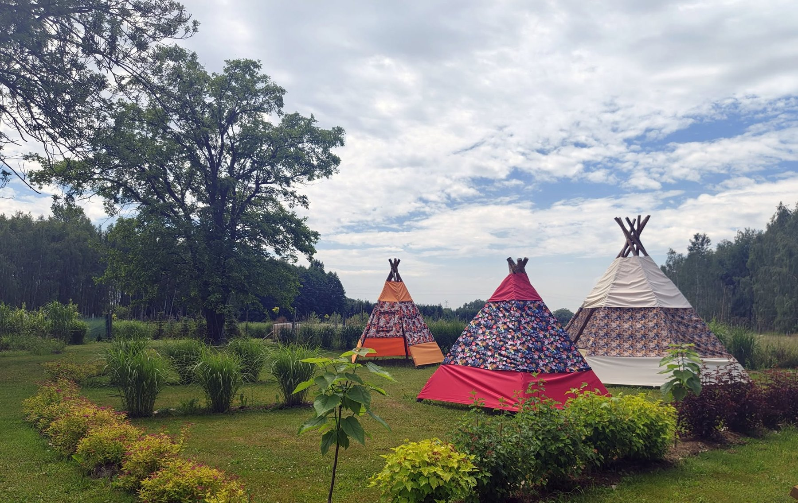

Urodziny dzieci
Swobodna przestrzeń, atrakcje ogrodowe, zdjęcia i klimat pikniku. Dzieci nie siedzą przy stole — mają gdzie się ruszyć.
wydarzenia
Urodziny, rodzinny piknik, małe przyjęcie, spotkanie komunijne albo plenerowa niespodzianka — ogród może być tłem, atrakcją i miejscem odpoczynku jednocześnie.

Swobodna przestrzeń, atrakcje ogrodowe, zdjęcia i klimat pikniku. Dzieci nie siedzą przy stole — mają gdzie się ruszyć.
Możliwość zrobienia zdjęć pamiątkowych i spędzenia czasu w zieleni po oficjalnej części uroczystości.
Dobre rozwiązanie dla grup, które chcą czegoś spokojniejszego, bardziej naturalnego i mniej formalnego.
Rośliny, ptactwo i ścieżka QR mogą stać się bazą do warsztatów przyrodniczych dla dzieci i rodzin.
Oddzielnie: zwykłe wejście, sesja fotograficzna, wynajem ogrodu na czas, impreza z rezerwacją, warsztaty. Dzięki temu klient od razu wie, za co płaci.